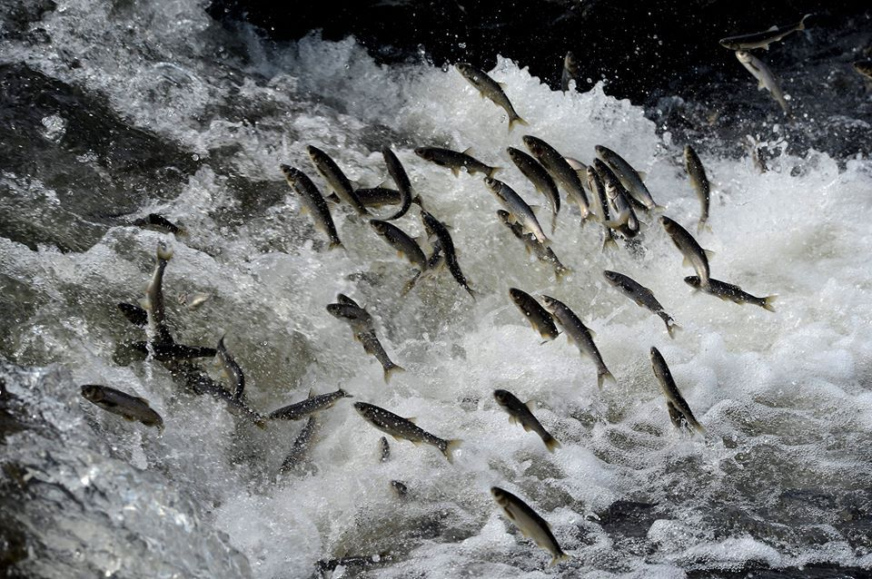

REHBERİ YÜKLENİYOR...
Gölün Sodalı Sularındaki Yaşam Mucizesi

Van Gölü'ne özgü, dünyada başka hiçbir yerde yaşamayan İnci Kefali (Van Balığı), gölün yüksek sodalı suyunda hayatta kalabilen tek balık türüdür. Bu mucizevi canlı, her yıl üreme döneminde (Mayıs ve Haziran aylarında) Van Gölü'nun sodalı sularından akarsuların tatlı sularına doğru meşakkatli bir yolculuğa çıkar.
Bu yolculuk sırasında balıkların suyun akışına zıt yönde, küçük şelaleleri uçarcasına aşması, dünyada sadece Van Gölü çevresinde izlenebilen muazzam bir doğa olayıdır. Geleneksel yöntemlerle yapılan Tandırda Van Balığı lezzeti ise bu kültürel mirasın en lezzetli parçasıdır.
Gölün yüksek alkalili sularına (10 pH'a kadar) uyum sağlayan dünyadaki nadir türlerden biridir.
Tatlı sulara ulaşmak için suyun tersine yüzen bu balıklar, engelleri adeta uçarak aşar.
Tandırda nar gibi kızaran Van Balığı, şehrin gastronomik kimliğinin en temel yapı taşıdır.
Toplam Ziyaretçi
kişi bu siteyi ziyaret etti